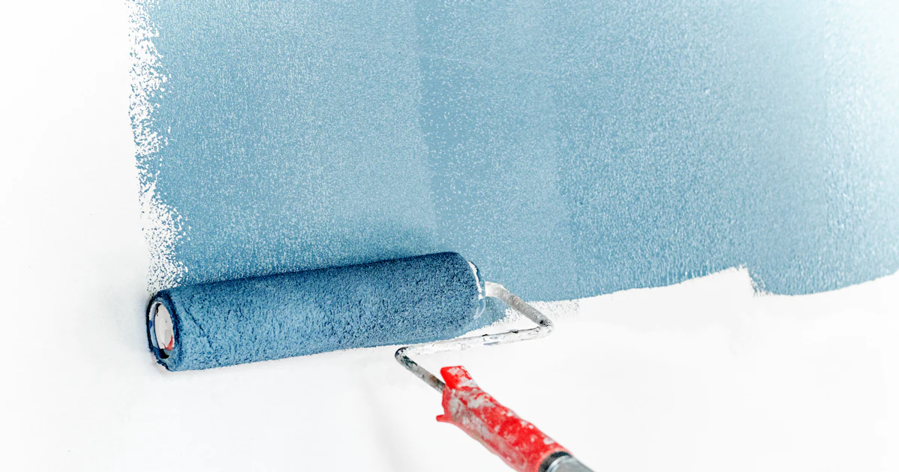

Interior walls in Dubai deal with conditions that paint labels rarely mention. Outside it can be very hot and humid. Inside, the AC runs most of the year. Where cold, dry indoor air meets a warm, damp wall or window frame, condensation forms. Over time that can lead to peeling, bubbling and mould spots, often in the same places every summer.
Picking the right paint helps, but most paint problems come from what happens before the first coat. This guide covers both.
Where Dubai conditions affect interior paint
Look for trouble in these areas first:
- Around windows and external walls. Cold glass and frames attract condensation, which runs down onto the wall and sill.
- Bathrooms and kitchens. Steam and cooking moisture settle on walls and ceilings, especially where extract fans are weak.
- Behind wardrobes and large furniture. Air doesn't circulate, so damp builds up unnoticed.
- Near AC units and ducts. Poorly insulated ducts or blocked drain lines can drip or sweat onto ceilings and walls.
If you see staining, bubbling or flaking in these spots, the cause is usually moisture, not the paint itself. Repainting without fixing the source will only hide the problem for a while. Our guide to signs of a water leak in an apartment explains how to tell condensation from a leak.
Choosing the right paint finish
Finish is how shiny the dried paint looks. It also affects how easy the wall is to clean and how much it shows defects.
- Matt or flat: Low shine, hides small surface imperfections well. Harder to wipe clean. Suits ceilings and low-traffic rooms.
- Eggshell or satin: Slight sheen, easier to clean. A good default for living rooms, bedrooms and corridors.
- Semi-gloss: More shine, very washable. Suits kitchens, bathrooms, doors and trim. It shows every bump and patch, so the wall must be well prepared.
- Gloss: Mostly for doors, frames and metal. Rarely used on whole walls.
For bathrooms and kitchens, choose a paint described as suitable for humid or wet areas, often with mould resistance. For ceilings, a flat ceiling paint reduces glare from lights.
Water-based vs solvent-based paint
Most interior walls in Dubai are painted with water-based emulsion. It has less smell, dries faster and lets you reoccupy a room sooner, which matters in an apartment. Solvent-based paints are mainly used on wood and metal where a hard finish is needed. If you use them indoors, ventilate well and keep the room empty until the smell clears.
Why preparation matters more than brand
A well-known brand applied over a dusty, cracked or damp wall will fail. An ordinary paint applied over a sound, clean, primed wall will usually last. Good preparation looks like this:
- Fix the cause of any damp. Repair leaks, clear AC drain lines and improve ventilation first.
- Remove loose and flaking paint. Scrape back to a firm edge.
- Fill cracks and holes. Use a suitable filler, let it dry fully, then sand flush.
- Clean the surface. Kitchen walls often carry a grease film that stops paint sticking.
- Treat mould. Clean with a mould treatment and let the wall dry before painting.
- Prime where needed. New plaster, filled patches, stains and bare gypsum all need primer or a sealer so the top coat dries evenly.
- Apply two finish coats. One coat rarely gives even colour, especially when changing from a dark shade to a light one.
Colours and practical choices
Lighter colours reflect more light and can make rooms feel cooler and larger. Very dark colours show dust and touch-ups more. If you are a tenant, many landlords expect walls returned in a neutral colour, so check your tenancy terms before choosing something bold. For feature walls, compare paint with wallpaper in our post on wallpaper vs paint in Dubai.
Keep a labelled tin of each colour after the job. Small touch-ups from the same batch blend in far better than a new mix.
When to call a contractor
You can repaint a small room yourself if the walls are sound. Peeling paint near windows, recurring mould, cracks that keep coming back, or a full apartment repaint between tenants are better handled by a team that can fix the cause and prepare surfaces properly. Zaman Technical Services provides interior painting for apartments, villas and offices across Dubai.